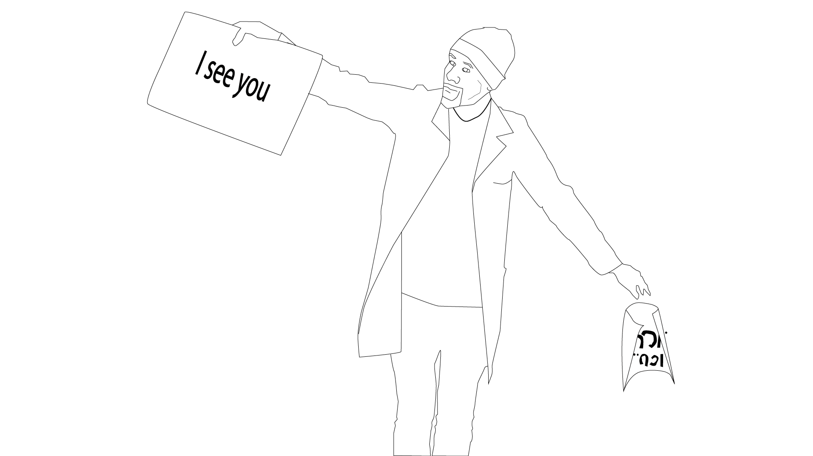

Between the corridors
And this white room of cables
The smell of ammonia permeates the air
The vital signs monitor reverberates
Amid quickened protocols and shouts
I am stuck to this bed
You see me
I struggle against the fade to black
From the force that made my brain swell
Perhaps an accidental slip
In the final release from confinement
Or maybe from something that escapes your memory
-Zakariya Amataya
Hometown: Narathiwat, Thailand
POET: No Woman in Poetry (2010); If as Deep as the Ocean Within Us (2013)
EDITOR: The Melayu Review

Zakariya Amataya lived in the capital city for over two decades before returning home in 2015. He is currently at work in editing his third poetry collection while actively engaged in Thailand's Southern border region, especially with a yearly literary magazine called The Melayu Review. In this collaborative pursuit, Che joins with local community organizations to organize writing workshops and critical debate to rebuild a space that has, since the imposition of martial law in 2004, experienced significant restrictions on political speech.